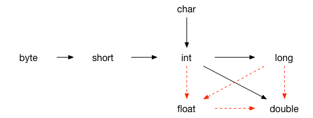

int[] a;
使用 new 运算符数组的创建 int[] a = new int[100] 数组的长度不要求是常量：new int[n] 会创建一个长度为 n 的数组
可以使用 for 循环进行赋值，或者直接 int[] a = {1, 2, 3} 进行赋值；数组创建时，数字数组所有元素初始化为 0，Boolean 数组所有元素初始化为 false，对象数组则初始化为 null 值。
每一个数组都有成员属性 length，使用 a.length 获得数组 a 的长度
a. 传统 for 循环
1
2
|
for(int i = 0; i < a.length; i++)
System.out.print(a[i] + " ");
|
b. for each 循环
1
2
3
|
for(int element : a)
System.out.print(element + " ");
//对于在for循环语句中需要使用元素下标的程序来说不合适
|
c. 利用 Arrays 类的 toString 方法
1
2
|
System.out.println(Arrays.toString(a));
//a为数值型的数组或Boolean数组
|
1
2
|
int[] b = a; //b和a引用同一个数组
b[1] = 7; //此时访问a[1]也是7
|
如果希望把一个数组的所有值拷贝到一个新的数组,使用 Arrays 类的 copyOf 方法
1
|
int[] b = Arrays.copyOf(a, a.length);
|
第二个参数表示新数组的长度，比原数组长，则多余的元素被赋值为 0 或者 false 或者 null，比原数组短，则只复制前面的对应长度的元素。
方法 Arrays.copyOfRange(type[] a, int start, int end)
type为 int, short, byte, long, double, float, Boolean 类型
1
|
Arrays.sort(a); //使用优化的快速排序
|
1
2
3
|
int[][] a = new int[2][3]; //正确
int[][] b = new int[2][]; //正确, 第二维的长度可以动态申请，可以不同
int[][] c = new int[][3]; //错误
|
1
2
3
4
5
6
7
8
9
10
11
12
13
14
15
16
|
int[][] b = new int[2][];
for (int i = 0; i < b.length; i++) {
b[i] = new int[i + 1];
for (int j = 0; j < b[i].length; j++)
b[i][j] = i + j;
}
//第一种方式
for(int i = 0; i < a.length; i++)
for(int j = 0; j < a[i].length)
System.out.print(a[i][j] + " ");
//第二种方式
for (int[] row : b)
for (int value : row)
System.out.print(value + " ");
//第三种方式
System.out.println(Arrays.deepToString(b));
|
多维数组的每一行是可以通过引用进行交换的。
1
2
3
4
5
|
float a = 12.3f;
int b = 5;
a = a / 0; //得到Infinity或者NaN
b = b / 0; //除零异常
System.out.println(a);
|
1
2
3
4
5
6
7
8
9
|
int a = 5;
int b = -5;
a = a % 3;
b = b % 3;
System.out.println(a + "," + b); //2,-2
a = a % -3;
b = b % -3;
System.out.print(a + "," + b); //2,-2
/*求模运算的结果与左操作数符号相同，与右操作数符号无关*/
|
1
2
3
4
5
6
7
8
|
byte a = 3;
byte b = 2;
b = a + b; //错误，a+b返回int型，int不能赋值给byte
b = (byte)(a + b); //正确，强制转换
b += a; //正确，b += a等价于b = (byte)(b + a)
int c = 7;
c = c + 5.2; //错误
c += 5.2; //正确
|

虚箭头表示可能有精度损失的转换，实箭头表示无信息丢失的转换。
基本数据类型的数组之间不能相互赋值，因为java中数组是类。
<< 左移，低位补 0，移位中可能会出现符号变换
>> 右移，高位补符号位
>>> 无符号右移，高位补 0
1
2
3
4
|
int a = 5;
// a >> 33等价于a >> 1，移的位数和数值类型的位数取模
byte b = 5;
// b >> 33等价于b >> 1,在b >> 33操作中，b自动提升为int型
|
~ 位反运算，每一位取反
位逻辑运算优先级：&，^， |
三目运算符 ? : 的第二第三操作数必须是可以赋值的
一个类可以使用所属包中所有的类，以及其他包中的公有类。
访问其他包中公有类的两种方式：在每个类前添加完整的包名；使用 import 语句(放在源文件的顶部， package 语句的后面)。
package 语句对整个源文件有效，即同一个源文件里的所有类都属于这个包。
// public
// private
// protected
// 没有指定则为同包可访问
static 静态修饰符
final 常量修饰符，也可以表示一个类不允许继承
1
2
3
4
5
6
7
8
9
10
11
12
13
14
|
public class A{
int i;
static int j;
public static void main(String[] args){
i = 3; //错误，i只有在new了一个对象后才会存在
j = 7; //正确，j是静态的，不需要创建对象就存在
A a = new A();
a.i = 3; //正确
A.i = 3; //错误
A.j = 4; //正确，j是所有的A类对象所共有的，所以可以通过类名来访问
a.j = 4; //正确
}
}
|